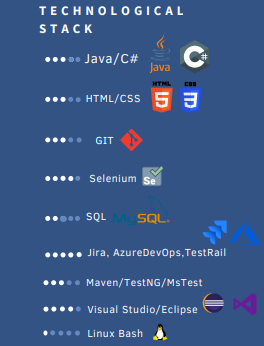

Hi! My name is Dominik Jakubaszek
I invite you to see my page in technologies


I am a graduate of the Faculty of Management in the field of management and IT business analytics.
Initially fascinated by management sciences, I wanted to become a manager and manage a team of several people, but deep down I felt a desire to work in technologies. For this reason, I also decided on Business Analytics. Over time, however, after completing my bachelor's degree, I was employed as a Software Tester.
There I gained my first experience in the IT world related to the profession of a software tester, but also the construction of websites and programming language syntax. In the meantime, my little passion, which is the German language, was born, which continues to this day.
Obtaining the title of certified tester according to ISTQB allowed me to acquire theoretical knowledge and consolidate the learned practices.
I am currently working in the Irish BAU (Business as Usual) team as a Junior Test Automation Engineer, supporting the maintenance of the current code in regression tests and development if necessary.


.gif)

My technological stack

Although I am a fan of traditional four wheels, I am also no stranger to riding two. This little monster is a Benzer 80cc with a top speed of 70km/h
me and my bike

I travel mostly once a year to major countries. So far I have visited Greece, the Canary Islands, Egypt and Turkey
Travels

I usually run short distances of 5 to 10 km. On my account I have completed one half-marathon and several running festivals "Run Warsaw", "Run of Independence", 'Praska 5
Running

Exercise is also part of my life. I am a certified personal trainer and gym instructor. In his free time, I train strength and dynamically.
Workout
Dominik Jakubaszek©